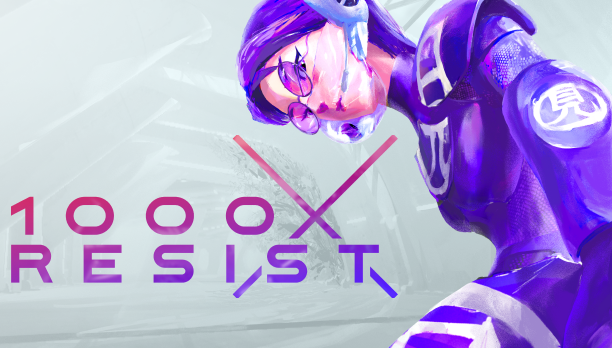
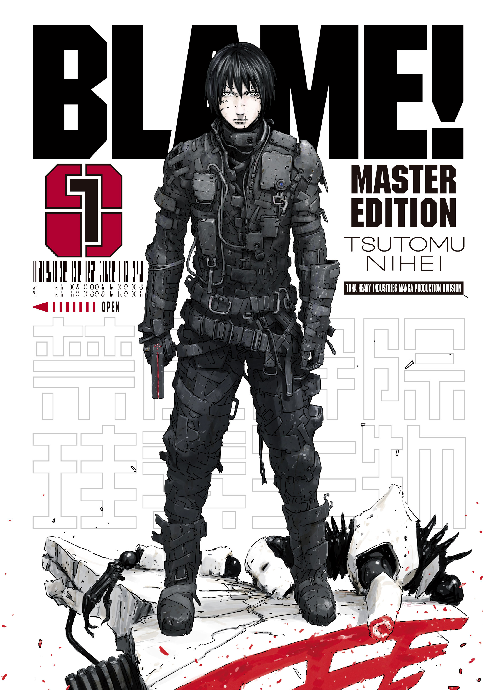
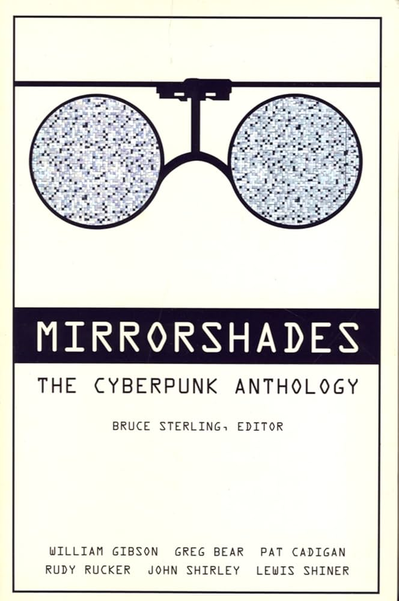
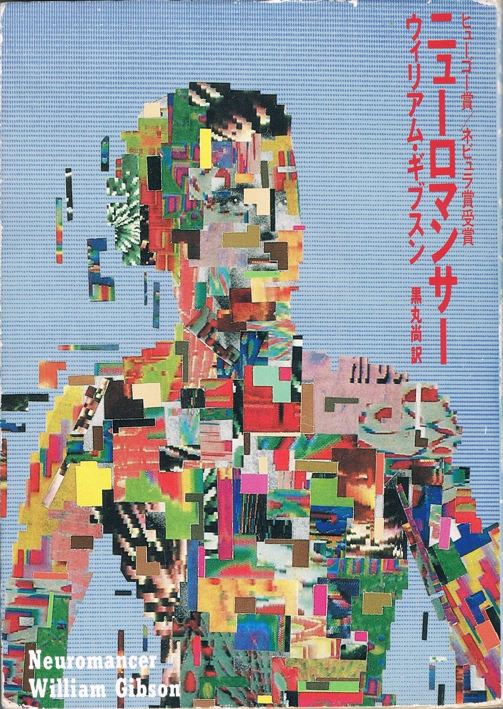

Staff Picks

This game follows Watcher, a clone of the “Allmother,” who was one of the only people immune to an alien-borne pandemic that ravaged the earth many generations prior. Watcher and her many sisters, all clones of the Allmother, survive together in their cult-like, subterranean society, where they determine their future together.
Why I like it: 1000xRESIST is one small step beyond a visual novel with its very simple gameplay, 99% of which is walking and talking. But man, the walking and talking in this game is fantastic. The world and the way it has descended are very vague, but that only adds to the intrigue that the developers provided with such a good visual setting and such incredible dialogue.
In the beginning, I thought what a cool concept and nice vibe. By the end, I found myself saying it was one of my favorite games of all time because of the depth that every single character has, despite being the same character (kind of). I enjoy the characters and the world of 1000xRESIST as much or more as those from any movie or book that I’ve ever consumed.
I will admit that 1000xRESIST is cyberpunk-adjacent rather than falling squarely within the genre, but it executes on its ideas so spectacularly that it still garners mention here. Plus, it’s my website, so I can write whatever I want.

Citizen Sleeper is a role-playing game where you, a Sleeper, wake up aboard a space station foreign to you, where many of the corporate-owned inhabitants see you as less than human. By rolling dice and making choices on how you spend each day aboard the station, you explore the best way to make important relationships, cut deals, and leave the ship in hopes of regaining your freedom.
Why I like it: The dice role and decision management aspects of this game haven’t been my style in the past, which kept me away from Citizen Sleeper for far too long. It didn’t take long to hook me once I started, though. Right away, Citizen Sleeper delivers good characters, a great plot, and an excellent source of motivation to keep rolling dice and hoping for the best outcome.
This is one of those games where the music, the art direction, and the incredible writing come together in such a cohesive way that it seems like the developers knew exactly what game they were trying to make from the first day they began working on it. If you’ve ever enjoyed a visual novel, I’d urge you to try this game. The mechanics are simple to learn and pleasant once you understand the systems, and the writing is second to none.

Cloudpunk puts you in the role of Rania, a delivery driver working for a semi-legal courier service in a sprawling, vertical cyberpunk city. Over the course of a night, you ferry packages, meet eccentric residents, and slowly piece together the human and inhuman stories that fill the neon skyline.
Why I like it: Sometimes a game doesn’t need complex systems, sometimes it just needs atmosphere. Cloudpunk nails atmosphere. The voxel art shouldn’t work as well as it does in the cyberpunk genre where tech is everything, but it’s beautiful; the writing shouldn’t matter in a delivery sim, but it's genuinely good. Driving through the rain and neon while listening to strangers tell their stories captures a kind of quiet, lived-in cyberpunk that most games miss.

You know what this game is and don’t need me to describe it to you.
Why I like it: Fact: Cyberpunk 2077 had a remarkably bad release. Another fact: Cyberpunk 2077 has become an excellent game after countless updates and corrections and is well worth playing if you like open world action RPGs. You can read anyone’s review of Cyberpunk 2077 and get the picture; fun game, great voice acting, excellent story. If you were a fan of the cyberpunk subgenre before playing it though, I think it goes much, much further than that.
I enjoyed cyberpunk so much because it provided the largest-scale, most immersive version of all of the cyberpunk stuff that I already loved. I hate when people use the phrase, “a love letter to the genre,” because it’s usually reductive. But with as many clear influences that this game highlights instead of shying away from, I think it’s appropriate to say.
This game took every concept that worked well from all of the most successful entries in the subgenre—from console cowboys to AI unification to running from the sword-wielding, motorcycle-riding gang that’s chasing you down—and put $175 million of development budget into putting them on-screen. It’s not perfect, but it’s the best way you can possibly pretend to be Henry Case running around Chiba City.

Ghostrunner casts you as a cybernetic ninja ascending a massive tower city, armed with nothing but a katana, lightning reflexes, and a grappling hook.
Why I like it: You go so fast! You kill seven people with a cybernetic sword and die! You go so fast again! Even coming from someone who isn't a huge fan of the first-person platforming speed games, this one is so well made and so specifically in the genre that this editor loved it.

Ruiner is a fast-paced twin-stick shooter where you play as a helmeted antihero on a mission to rescue his kidnapped brother. The gameplay is a mix of fast-paced melee and gun combat, all wrapped in a pounding synth soundtrack and blood-red visuals.
Why I like it: Ruiner is grim cyberpunk turned up as high as the dial goes. The story is minimal, the characters are archetypal, but the vibe fits perfectly within the genre—just with more red than neon. It’s the kind of game you play less for the plot and more for the feeling of being a killing machine. Super well made game.

In Richard Morgan’s version of the future, people’s consciousness can be transferred into new bodies (or “sleeves”), making death escapable for the lucky few who are rich enough to afford the process. Takeshi Kovacs, a former elite soldier turned private investigator, is hired to investigate the murder of one such person.
Why I like it: Altered Carbon is full of tropes in the genre, but its core concept, the idea of “resleeving” your mind into a new body to escape death, is executed so well that the whole consciousness transfer thing feels original. The gritty main character isn’t wholly original and the villain isn’t the best I’ve ever read, but the world and the execution of ideas are excellent. This is one of the most successful entries in the cyberpunk subgenre for a good reason.
Please don't buy this from an online megaretailer. Instead, buy it from an independent bookstore with a good sci-fi section.

Blame! follows Killy, a silent wanderer armed with an impossibly powerful gun, as he searches for humans with the Net Terminal Gene across a vast megastructure. Dialogue is sparse, characters are fleeting, and the environment is the main mode of storytelling, where bleak structures stretch on endlessly.
Why I like it: Blame! is one of those works where you’re given very little, but that feeds into your intrigue while you flip through pages showing vast, lifeless expanses. That lack of explanation becomes the point: the world is too big, too far gone, to be grasped.
Cyberpunk is often about cityscapes and tech gone wrong, but Blame! shows what would happen if the dystopian city kept evolving, outlived people, and then kept evolving into nothing. I’m not a huge manga reader, but Blame! really stuck with me.
Please don't buy this from an online megaretailer. Instead, buy it from an independent bookstore with a good sci-fi section.

This short story collection by William Gibson gathers some of his earliest and most defining works. The title story, co-written with Bruce Sterling, brings in genre-defining tropes: console cowboys, ice-breaking, and big-city crime at night. Other stories like “Johnny Mnemonic” and “New Rose Hotel” further sketch the outline of what would later become full-fledged cyberpunk.
Why I like it: Burning Chrome feels like cyberpunk before the genre knew exactly what it was, which is fun to experience with your hindsight glasses on. Not every story is perfect, but the good ones are staples. The title story alone captures everything that makes Gibson great: it gets to the point without bloat, the tech is cool in the Gibson way, and some guys are doing some crime. If Neuromancer is the perfect finished product, Burning Chrome is the concept work that set the foundation.
Please don't buy this from an online megaretailer. Instead, buy it from an independent bookstore with a good sci-fi section.

Seven years after Neuromancer, the second entry in Gibson’s Sprawl trilogy weaves together three storylines: a mercenary caught in a corporate double-cross, a young hacker in over his head, and an art dealer hunting a mysterious painter. As the threads converge, the novel explores the evolving relationship between humans and AIs, including strange voodoo-like digital entities.
Why I like it: Often overshadowed by Neuromancer, Count Zero’s multi-perspective approach opens the world up into an ecosystem of interconnected players. Also, in a moment when real life is full of AI tropes, the Haitian-inspired AI concept still feels super fresh.
Please don't buy this from an online megaretailer. Instead, buy it from an independent bookstore with a good sci-fi section.

Edited by Bruce Sterling, Mirrorshades brings together many of the early voices from the original cyberpunk movement (Gibson, Cadigan, Sterling, and more). Each story experiments with different aspects of the genre—from body modification and AI to street-level rebellion against sprawling corporations.
Why I like it: Anthologies avoid wearing their settings thin; you get sharp bursts of ideas without bloat. These stories aren’t perfect, but they capture the punk/rebellious energy I picture when I think of the genre.
Please don't buy this from an online megaretailer. Instead, buy it from an independent bookstore with a good sci-fi section.

Neuromancer follows Case, a high-tech, low-life hacker trying to survive after a former employer disabled the tech within his nervous system. After a shadowy ex-military officer and a razorgirl approach him, Case agrees to a high-stakes heist in hopes of restoring himself.
Why I like it: It’s my favorite piece of cyberpunk media. Tight, sub-300 pages, zero fluff. Case isn’t overdone; he acts out of need. The story answers what matters and leaves the rest implied—rare in modern sci-fi.
Please don't buy this from an online megaretailer. Instead, buy it from an independent bookstore with a good sci-fi section.

Abelard Lindsay navigates power struggles between two posthuman factions: Shapers (genetic modification) and Mechanists (cybernetics). Across decades and shifting alliances, humanity evolves beyond Earth—and flesh.
Why I like it: Sterling’s big, philosophical take on where cyberpunk can go. Dense, but rewarding in scope. Much of the genre is street-level; Schismatrix looks beyond that in a bold way.
Please don't buy this from an online megaretailer. Instead, buy it from an independent bookstore with a good sci-fi section.

In a city where biotech created a class of “Titans”—genetically modified elites— a detective is pulled into a murder involving one of them. Classic noir setup meets a cyberpunk future.
Why I like it: Effortlessly readable and confidently simple (compliment). It merges noir and sci-fi tropes cleanly; the class-struggle angle echoes Altered Carbon. Breezy and fun the whole way.
Please don't buy this from an online megaretailer. Instead, buy it from an independent bookstore with a good sci-fi section.

Thirty years after the original, K—a replicant blade runner—uncovers a secret that could change the balance between humans and replicants. It’s a story about identity, memory, and what it means to be real.
Why I like it: Making a sequel to Blade Runner was a tall order, but Villeneuve pulled it off. The scale, the bleak setting, the design—peak cyberpunk cinema. One of the best entries in the genre.

Set in the world of Cyberpunk 2077, Edgerunners follows David Martinez, a street kid who implants illegal tech and spirals into Night City’s mercenary life.
Why I like it: I was skeptical, but it rules. The short run keeps it tight; motivations are clear, the style is gorgeous (Trigger!), and it’s surprisingly emotional. Campy moments, sure—still well written.

Major Motoko Kusanagi, a cyborg with Section 9, hunts a mysterious hacker known as the Puppet Master.
Why I like it: Less about politics, more about identity and consciousness in a cybernetic body. Iconic frames, a beautiful/bleak skyline, and an existential core. (Watch subbed.)

Expands the GITS universe with episodic cases and arcs following Major Kusanagi and Section 9.
Why I like it: Like a cyberpunk Cowboy Bebop: the world is laid out, and the characters are your throughline. Not just derivative of the film; if you want more GITS, this is it.

An art book that mixes narrative with wordless visuals. The art alone tells stories, with just enough lore to make the world feel alive.
Why I like it: Sometimes you just want to look at cyberpunk—this scratches that itch. Josan Gonzalez (who did those new Sprawl covers) packs 200+ pages with dense, gorgeous scenes. My most-flipped visual book.

A photography book capturing Tokyo at night—real streets framed like cyberpunk scenes.
Why I like it: Wong proves he knows how to make things look good. It lives on my desk; I open it weekly.